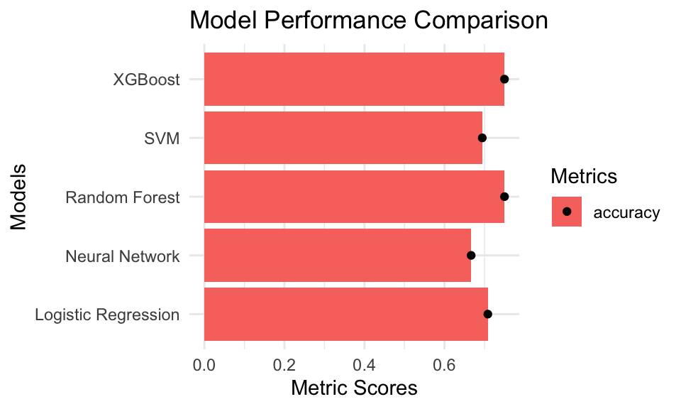

Comparing machine-learning classifiers on a clinical dataset
Objective — Compare machine-learning classifiers on a clinical classification task (breast cancer recurrence).
Methods — Logistic regression, random forest, SVM, XGBoost, and a neural network via a tidymodels workflow — with cross-validation, feature-importance, partial-dependence, and ROC/AUC evaluation.
Data — UCI Machine Learning Repository breast cancer dataset.
Tools — R (tidymodels, randomForest, xgboost, kernlab, nnet).
Breast Cancer- Classification
This breast cancer domain was obtained from the University Medical Centre, Institute of Oncology, Ljubljana, Yugoslavia. This is one of three domains provided by the Oncology Institute that has repeatedly appeared in the machine learning literature. (See also lymphography and primary-tumor.)
Objectives
The data set is freely available at the UC Irvine Machine Learning Repository. For this data set, the repository provides a comparison of several machine learning classification algorithms ( XGBoost, Random Forest, Neural Networks, Support Vector Machine (SVM) and Logistic regression ) through a graph of accuracy and precision metric implemented in Python.
Here, we delve into a greater details of the data set, the variables, and the implementation and comparison of all the above algorithms in R using tidymodels which is is a collection of packages for modeling and machine learning using tidyverse principles.
Data
The dataset consists of the following features with categorical and integer data types:
Class: Target variable with binary categories (no-recurrence-events, recurrence-events)
Age: Categorical, representing age groups (10-19, 20-29, etc.)
Menopause: Categorical, representing menopausal status (lt40, ge40, premeno).
Deg-malig: Integer, representing the degree of malignancy (1, 2, 3).
Breast: Binary categorical (left, right).
Breast-squad: Categorical, representing the quadrant of the breast (left-up, left-low, etc.).
Irradiat: Binary categorical (yes, no).
Let’s start it here
Install packages
Show the code
# Install necessary packages if you haven't already#install.packages(c("tidymodels", "xgboost", "kernlab", #"randomForest", "nnet", "readxl", "tidyverse", "recipes"))# Load the necessary librarieslibrary(tidymodels)library(xgboost)library(kernlab)library(randomForest)library(nnet)library(ggplot2)library(readxl)library(tidyverse)library(recipes)library(pdp)
Import data
Show the code
# Import the datasetdata <-read_excel("DataSets/BreastCancer_Classification/BreastCancer_1988_Classification.xlsx")# View the first few rows of the dataset to understand its structureglimpse(data)
1. **Convert Binary Text Features to Binary Numeric**:
• Convert node-caps, breast, and irradiat into binary numeric form (e.g., yes/no to 1/0).
2. **Encode Categorical Variables**:
• Convert categorical variables (Age, menopause, tumor-size, inv-nodes, breast-squad) into numeric form using one-hot encoding for models that do not handle categorical variables (e.g., XGBoost).
• For models that can handle categorical data (e.g., Random Forest, Logistic Regression), ensure the data is properly labeled.
3. **Ensure Numeric Representation**:
• Ensure all numeric features (e.g., deg-malig) are in numeric format.
The handling of features like tumor-size, menopause, Age, breast, and breast-quad by different algorithms in R depends on whether the algorithm can natively handle categorical data or if it requires numeric input. Here’s how these features are typically processed:
• **Categorical features** like tumor-size, menopause, Age, and breast-quad are initially in a non-numeric format, which needs to be converted for most algorithms.
Handling by Different Algorithms:
• **XGBoost**:
• XGBoost cannot handle categorical data directly, so these features need to be **one-hot encoded**. This process converts each categorical feature into multiple binary (0/1) columns, each representing a category.
• **Support Vector Machine (SVM)**:
• Like XGBoost, SVM requires numeric inputs. Hence, these features should be **one-hot encoded**.
• **Random Forest**:
• Random Forest can handle categorical features if they are provided as factors in R. However, it's common to **one-hot encode** them to ensure compatibility across all algorithms.
• **Neural Networks**:
• Neural Networks typically expect numeric input, so these features should be **one-hot encoded**.
• **Logistic Regression**:
• Logistic Regression requires numeric input. If you use a library like glm, you can handle categorical variables either by **one-hot encoding** or by converting them into factor variables in R.
2. Breast (Binary Feature)
• **Breast** is already a binary feature (left or right), but it needs to be converted into numeric form (0 and 1).
Handling by Different Algorithms:
• **XGBoost, SVM, Random Forest, Neural Networks, Logistic Regression**:
• All these algorithms will work with breast after it has been converted to numeric form (0/1).
Summary of Transformation:
• **One-Hot Encoding**: Required for categorical variables like tumor-size, menopause, Age, and breast-quad in algorithms like XGBoost, SVM, Neural Networks, and Logistic Regression.
• **Binary Encoding**: Convert binary features like breast from text (left, right) to numeric (0, 1).
• **Factors**: For Random Forest, categorical features can remain as factors in R, but one-hot encoding is also a common practice to maintain uniformity across different algorithms.
Show the code
# Apply label encoding to the target variable 'Class'data <- data %>%mutate(Class =ifelse(Class =="no-recurrence-events", 0, 1))%>%mutate(Class=as.factor(Class))# One-Hot Encoding for categorical variablesdata <-recipe(Class ~ ., data = data) %>%step_dummy(all_nominal_predictors(), -all_outcomes()) %>%prep() %>%bake(new_data =NULL)# Ensure all integer features are in the correct formatdata <- data %>%mutate(`deg-malig`=as.integer(`deg-malig`))# View the transformed datahead(data)
# Split data into training and testing setsset.seed(123)data_split <-initial_split(data, prop =0.75)train_data <-training(data_split)test_data <-testing(data_split)
4. Create a Recipe for Data Preprocessing
Show the code
# Create a recipe for preprocessingdata_recipe <-recipe(Class ~ ., data = train_data) %>%step_dummy(all_nominal_predictors()) %>%step_zv(all_predictors()) %>%# remove zero variance predictorsstep_normalize(all_predictors())
# Fit the modelslog_reg_fit <-fit(log_reg_workflow, data = train_data)rf_fit <-fit(rf_workflow, data = train_data)svm_fit <-fit(svm_workflow, data = train_data)xgb_fit <-fit(xgb_workflow, data = train_data)nn_fit <-fit(nn_workflow, data = train_data)
# Collect all metricsmodel_results <-bind_rows( log_reg_results %>%mutate(Model ="Logistic Regression"), rf_results %>%mutate(Model ="Random Forest"), svm_results %>%mutate(Model ="SVM"), xgb_results %>%mutate(Model ="XGBoost"), nn_results %>%mutate(Model ="Neural Network"))# Filter for Accuracy and Precision metricsmodel_results_filtered <- model_results %>%filter(.metric %in%c("accuracy", "precision"))# Summarize the mean and variationmodel_summary <- model_results_filtered %>%group_by(Model, .metric) %>%summarize(mean_value =mean(.estimate),sd_value =sd(.estimate),.groups ="drop" )
7. Visualize the results
Show the code
# Create bar graphs with mean performance and variationsggplot(model_summary, aes(x = Model, y = mean_value, fill = .metric)) +geom_bar(stat ="identity", position =position_dodge()) +geom_errorbar(aes(ymin = mean_value - sd_value, ymax = mean_value + sd_value),width =0.2, position =position_dodge(.9)) +geom_point(position =position_dodge(.9)) +labs(title ="Model Performance Comparison",x ="Models",y ="Metric Scores",fill ="Metrics") +theme_minimal() +coord_flip()

Figure 1: A scatter plot
Show the code
library(ggplot2)# Assume 'model_summary' is your data frame that contains the following columns:# - Model: The name of the model (e.g., "XGBoost", "SVM", etc.)# - mean_value: The mean score of the metric (accuracy or precision)# - sd_value: The standard deviation of the score# - .metric: The name of the metric ("accuracy" or "precision")# Create a two-panel plot using point range plotsggplot(model_summary, aes(x = Model, y = mean_value, color = .metric)) +geom_pointrange(aes(ymin = mean_value - sd_value, ymax = mean_value + sd_value),position =position_dodge(0.5)) +facet_wrap(~ .metric, scales ="free_y") +labs(title ="Model Performance Comparison",x ="Models",y ="Metric Scores",color ="Metrics") +theme_minimal() +coord_flip()
Warning: Removed 5 rows containing missing values or values outside the scale range
(`geom_segment()`).
# install.packages("pdp")library(pdp)# A randomForest fit inside a tidymodels workflow does not retain its training# data, so pdp::partial() cannot recover it automatically. Supply the exact# processed predictors the forest was trained on via the recipe's mold.rf_train <-extract_mold(rf_fit)$predictorspartial( rf_fit_extract$fit,pred.var ="deg-malig",train = rf_train) %>%autoplot()
Kuhn, Max, and Hadley Wickham. 2020. “Tidymodels: A Collection of Packages for Modeling and Machine Learning Using Tidyverse Principles.”https://www.tidymodels.org.
Rivers, Caitlin, Jean-Paul Chretien, Steven Riley, Julie A Pavlin, Alexandra Woodward, David Brett-Major, Irina Maljkovic Berry, Lindsay Morton, Richard G Jarman, and Matthew Biggerstaff. 2019. “Using “Outbreak Science” to Strengthen the Use of Models During Epidemics.”Nature Communications 10 (1): 3102.